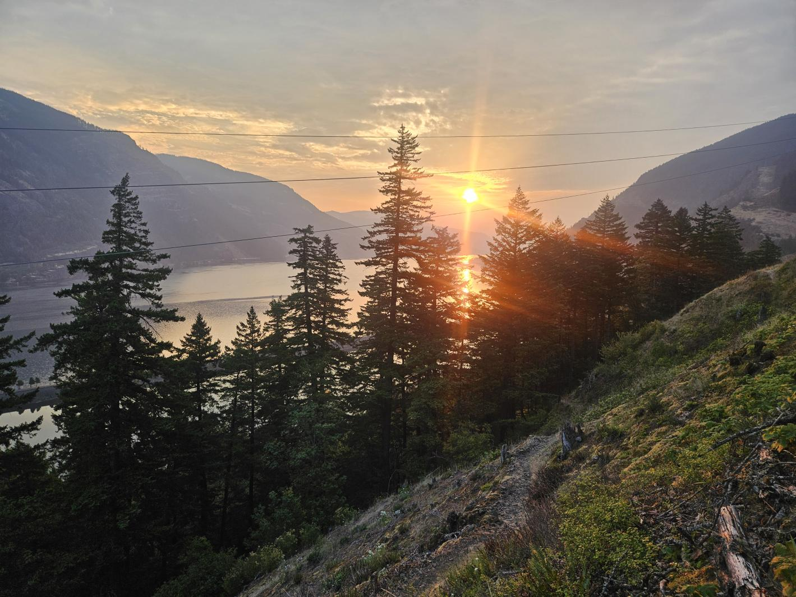
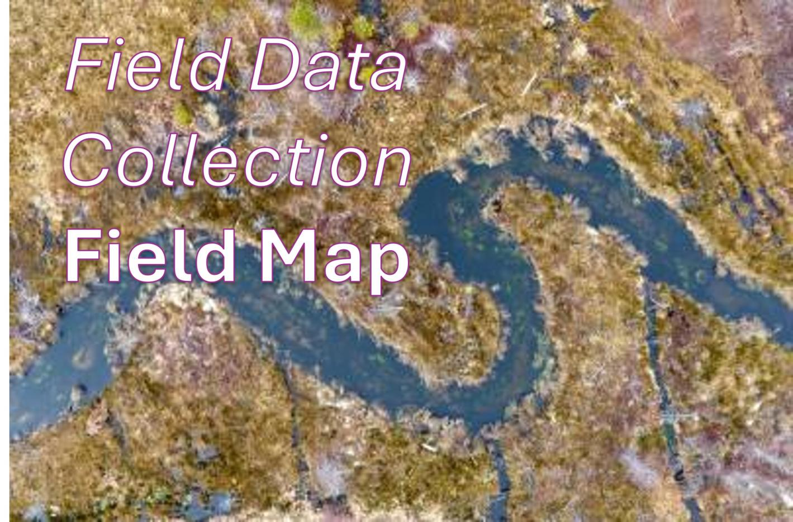
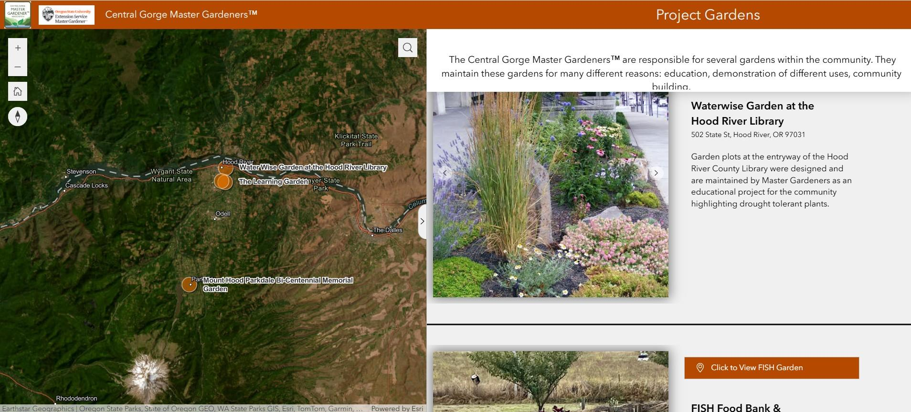

Whether you need a better database, a beautiful map, a field data collection workflow, or help figuring out what your spatial data can tell you, we can help.
Thoughtful, professional maps that make complex information clear, useful, and easy to understand.
MAPSWell-organized geographic data and databases designed to support your projects and the way your team works.
DATATurn your GIS data into useful online maps, apps, and dashboards with ArcGIS Online.
WEB GISBring GIS into the field with practical workflows for collecting, updating, and accessing data using Field Maps, Survey123, and QuickCapture.
FIELD GISUse geography to uncover patterns, answer questions, and turn data into information that supports better decisions.
ANALYSISConnect ArcGIS Pro, ArcGIS Online, and field tools to simplify processes, reduce repetitive work, and get more from your GIS.
WORKFLOWSFeatured projects where we've helped turn geographic data into clear, actionable tools.

Nomad Mapping rebuilt the Friends GIS from the ground up, creating a structured, efficient system for managing spatial data, maps, and files. By integrating traditional map making, ArcGIS Online, and web mapping applications, the system makes information easier to access, track, and use—supporting long-term land stewardship while saving time and resources.

We transformed Inter-Fluve’s stream survey process from paper-based to digital. Using Field Maps, surveyors can enter information directly from mobile devices in the field, making data immediately available on the desktop. The workflow reduces post-survey processing and lets surveyors spend less time managing paperwork and more time doing their work.

An interactive web mapping application was created for the Central Gorge Master Gardeners, showcasing project gardens throughout Hood River County. Built with Experience Builder, the application gives the public an easy way to explore garden locations and learn about each site’s purpose and features.
You don't need a huge consulting firm to get great GIS support. We work with organizations that need experienced GIS expertise but don't necessarily need a full-time GIS department. We can jump into an existing project, help clean up a GIS that's gotten complicated, build something from scratch, or take care of a specific piece of a larger project.